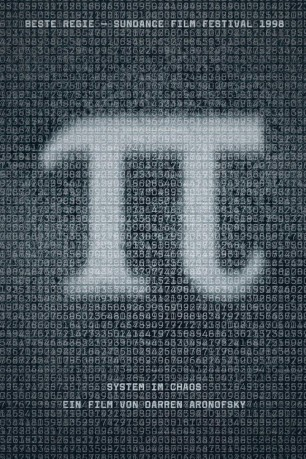

#2492 Pi - System im Chaos
Alternativ: Pi
 
 IMDB-Wertung: 7.4 / 10
IMDB-Wertung: 7.4 / 10  Metascore: 72
Metascore: 72 
Mathematikgenie Max Cohen steht kurz vor der Entschlüsselung eines numerischen Systems, das die Struktur von Zufall und Chaos aufdecken könnte. Mit diesem Code ließen sich nicht nur die Abläufe des Universums erklären, sondern auch Börsenbewegungen voraussagen. Bald sieht sich Max durch skrupellose Wall-Street-Haie verfolgt, aber auch eine religiöse Sekte und der Geheimdienst sind ihm auf den Fersen. Seine mentale Gesundheit leidet, er schlingert mehr und mehr in den Wahnsinn. Als es ihm gelingt, den 216-stelligen Code zu knacken, macht er eine Entdeckung, für die alle bereit sind, ihn zu töten...
Jahr: 1998
Dauer: 84 Minuten
FSK: 12
Land: USA Studio: Live Film & Mediaworks Inc.Tonspuren:
Untertitel:
Auflösung: 1080p (1792x1080) Größe: 7802 MB
Genre: Drama, Thriller
Regisseur: Darren Aronofsky
Drehbuch: Darren Aronofsky, Darren Aronofsky, Sean Gullette, Eric Watson, Darren Aronofsky
Soundtrack: Clint Mansell
Darsteller:
- Sean Gullette als Maximillian Cohen
 Mark Margolis als Sol Robeson
Mark Margolis als Sol Robeson Ben Shenkman als Lenny Meyer
Ben Shenkman als Lenny Meyer- Samia Shoaib als Devi
 Ajay Naidu als Farrouhk
Ajay Naidu als Farrouhk- Lauren Fox als Jenny Robeson
 Stanley B. Herman als Moustacheless Man
Stanley B. Herman als Moustacheless Man- Clint Mansell als Photographer
- Pamela Hart als Marcy Dawson
 Stephen Pearlman als Rabbi Cohen
Stephen Pearlman als Rabbi Cohen- Kristyn Mae-Anne Lao als Jenna
- Espher Lao Nieves als Jenna's Mom
- Joanne Gordon als Mrs. Ovadia
- Tom Tumminello als Ephraim
- Henri Falconi als Kaballah Scholar
- Isaac Fried als Kaballah Scholar
- Ari Handel als Kaballah Scholar
- Oren Sarch als Kaballah Scholar
- Lloyd J. Schwartz als Kaballah Scholar
- Richard Lifschutz als Kaballah Scholar
- David Strahlberg als Kaballah Scholar
- Peter Cheyenne als Brad
- David Tawil als Jake
- J.C. Islander als Man Presenting Suitcase
- Abraham Aronofsky als Man Delivering Suitcase
- Ray Seiden als Transit Cop
- Scott Franklin als Voice of Transit Cop
- Chris Johnson als Limo Driver
- Sal Monte als King Neptune
Datei: X:\1998\Pi - System im Chaos (1998, FSK12, 1792x1080).mkv seit 13.11.2015
Festplatte: HD 1996-2002
 Es gibt insgesamt 86 Filme in der Gruppe '1998'
Es gibt insgesamt 86 Filme in der Gruppe '1998'